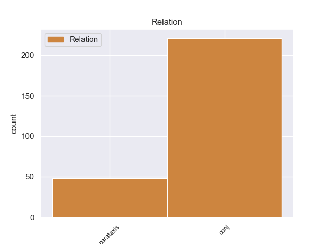
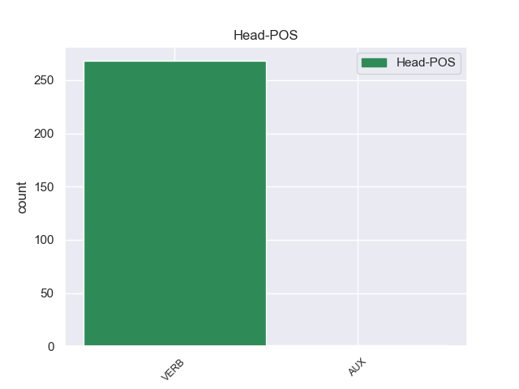
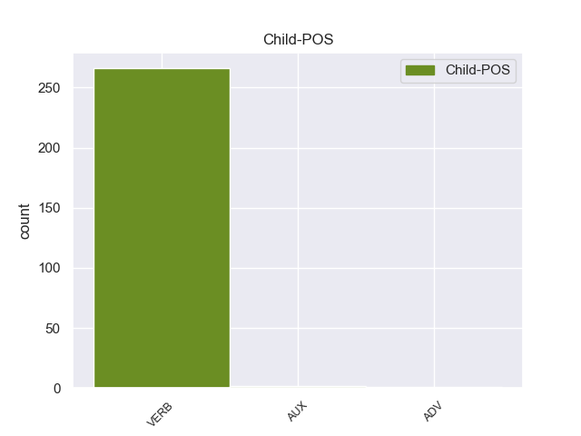

Distribution of features within this leaf



Agreement Rules sorted by frequency.
- When the dependent token is the conjunct(conj) of the head token,
1 Οι _ _ _ _ 0 _ _ _
2 διαδικασίες _ _ _ _ 0 _ _ _
3 κινήθηκαν κινήθηκα VERB _ Mood=Ind|Number=Plur|Person=3|Tense=Past|VerbForm=Fin 0 _ _ _
4 τον _ _ _ _ 0 _ _ _
5 Ιούλιο_του_2000 _ _ _ _ 0 _ _ _
6 και _ _ _ _ 0 _ _ _
7 αφορούν αφορούr VERB _ Mood=Ind|Number=Plur|Person=3|Tense=Pres|VerbForm=Fin 3 conj _ _
8 λαθρεμπόριο _ _ _ _ 0 _ _ _
9 όπλων _ _ _ _ 0 _ _ _
10 , _ _ _ _ 0 _ _ _
11 αθέμιτη _ _ _ _ 0 _ _ _
12 άσκηση _ _ _ _ 0 _ _ _
13 επιρροής _ _ _ _ 0 _ _ _
14 , _ _ _ _ 0 _ _ _
15 κατάχρηση _ _ _ _ 0 _ _ _
16 επιχειρηματικού _ _ _ _ 0 _ _ _
17 κεφαλαίου _ _ _ _ 0 _ _ _
18 , _ _ _ _ 0 _ _ _
19 κατάχρηση _ _ _ _ 0 _ _ _
20 εμπιστοσύνης _ _ _ _ 0 _ _ _
21 και _ _ _ _ 0 _ _ _
22 αποδοχή _ _ _ _ 0 _ _ _
23 προϊόντων _ _ _ _ 0 _ _ _
24 εγκλήματος _ _ _ _ 0 _ _ _
25 . _ _ _ _ 0 _ _ _
1 Πρότεινε πρότειer VERB _ Mood=Ind|Number=Sing|Person=3|Tense=Past|VerbForm=Fin 0 _ _ _
2 να _ _ _ _ 0 _ _ _
3 επιτεθούν _ _ _ _ 0 _ _ _
4 μαζί _ _ _ _ 0 _ _ _
5 με _ _ _ _ 0 _ _ _
6 άλλους _ _ _ _ 0 _ _ _
7 επαναστάτες _ _ _ _ 0 _ _ _
8 που _ _ _ _ 0 _ _ _
9 ήταν _ _ _ _ 0 _ _ _
10 σ _ _ _ _ 0 _ _ _
11 το _ _ _ _ 0 _ _ _
12 Ακρωτήρι _ _ _ _ 0 _ _ _
13 , _ _ _ _ 0 _ _ _
14 σ _ _ _ _ 0 _ _ _
15 τους _ _ _ _ 0 _ _ _
16 Τούρκους _ _ _ _ 0 _ _ _
17 και _ _ _ _ 0 _ _ _
18 να _ _ _ _ 0 _ _ _
19 τους _ _ _ _ 0 _ _ _
20 εκτοπίσουν _ _ _ _ 0 _ _ _
21 από _ _ _ _ 0 _ _ _
22 την _ _ _ _ 0 _ _ _
23 πεδιάδα _ _ _ _ 0 _ _ _
24 ( _ _ _ _ 0 _ _ _
25 η _ _ _ _ 0 _ _ _
26 Μαλάξα _ _ _ _ 0 _ _ _
27 είναι ίναιer VERB _ Mood=Ind|Number=Sing|Person=3|Tense=Pres|VerbForm=Fin 1 parataxis _ _
28 σε _ _ _ _ 0 _ _ _
29 κάποιο _ _ _ _ 0 _ _ _
30 υψόμετρο _ _ _ _ 0 _ _ _
31 ) _ _ _ _ 0 _ _ _
32 . _ _ _ _ 0 _ _ _
Disagree Examples:
1 Για _ _ _ _ 0 _ _ _
2 παράδειγμα _ _ _ _ 0 _ _ _
3 οι _ _ _ _ 0 _ _ _
4 τοπικές _ _ _ _ 0 _ _ _
5 αρχές _ _ _ _ 0 _ _ _
6 θα _ _ _ _ 0 _ _ _
7 πρέπει _ _ _ _ 0 _ _ _
8 σ _ _ _ _ 0 _ _ _
9 το _ _ _ _ 0 _ _ _
10 μέλλον _ _ _ _ 0 _ _ _
11 να _ _ _ _ 0 _ _ _
12 σκέφτονται σκέφτοντ VERB _ Mood=Sub|Number=Plur|Person=3|Tense=Pres|VerbForm=Fin 0 _ _ _
13 εγωιστικά _ _ _ _ 0 _ _ _
14 , _ _ _ _ 0 _ _ _
15 δηλαδή _ _ _ _ 0 _ _ _
16 να _ _ _ _ 0 _ _ _
17 σκέφτονται σκέφτοντ VERB _ Mood=Ind|Number=Plur|Person=3|Tense=Pres|VerbForm=Fin 12 conj _ _
18 μόνο _ _ _ _ 0 _ _ _
19 το _ _ _ _ 0 _ _ _
20 άμεσο _ _ _ _ 0 _ _ _
21 συμφέρον _ _ _ _ 0 _ _ _
22 τους _ _ _ _ 0 _ _ _
23 . _ _ _ _ 0 _ _ _
1 Η _ _ _ _ 0 _ _ _
2 ίδια _ _ _ _ 0 _ _ _
3 δήλωσε _ _ _ _ 0 _ _ _
4 πως _ _ _ _ 0 _ _ _
5 " _ _ _ _ 0 _ _ _
6 σ _ _ _ _ 0 _ _ _
7 τις _ _ _ _ 0 _ _ _
8 30 _ _ _ _ 0 _ _ _
9 Απριλίου _ _ _ _ 0 _ _ _
10 γιορτάζουμε γιορτάζουμr VERB _ Mood=Sub|Number=Plur|Person=3|Tense=Pres|VerbForm=Fin 0 _ _ _
11 τα _ _ _ _ 0 _ _ _
12 200 _ _ _ _ 0 _ _ _
13 χρόνια _ _ _ _ 0 _ _ _
14 από _ _ _ _ 0 _ _ _
15 την _ _ _ _ 0 _ _ _
16 εγκαθίδρυση _ _ _ _ 0 _ _ _
17 του _ _ _ _ 0 _ _ _
18 Βασιλείου _ _ _ _ 0 _ _ _
19 των _ _ _ _ 0 _ _ _
20 Κάτω _ _ _ _ 0 _ _ _
21 Χωρών _ _ _ _ 0 _ _ _
22 , _ _ _ _ 0 _ _ _
23 ενώ _ _ _ _ 0 _ _ _
24 επίσης _ _ _ _ 0 _ _ _
25 κλείνω κλείνωr VERB _ Mood=Ind|Number=Sing|Person=3|Tense=Pres|VerbForm=Fin 10 conj _ _
26 τα _ _ _ _ 0 _ _ _
27 75 _ _ _ _ 0 _ _ _
28 χρόνια _ _ _ _ 0 _ _ _
29 . _ _ _ _ 0 _ _ _
1 Αν _ _ _ _ 0 _ _ _
2 οι _ _ _ _ 0 _ _ _
3 αρχές _ _ _ _ 0 _ _ _
4 του _ _ _ _ 0 _ _ _
5 Ελσίνκι _ _ _ _ 0 _ _ _
6 είχαν _ _ _ _ 0 _ _ _
7 πει _ _ _ _ 0 _ _ _
8 ότι _ _ _ _ 0 _ _ _
9 θέλουν _ _ _ _ 0 _ _ _
10 100 _ _ _ _ 0 _ _ _
11 λεωφορεία _ _ _ _ 0 _ _ _
12 που _ _ _ _ 0 _ _ _
13 να _ _ _ _ 0 _ _ _
14 κινούνται _ _ _ _ 0 _ _ _
15 με _ _ _ _ 0 _ _ _
16 φυσικό _ _ _ _ 0 _ _ _
17 αέριο _ _ _ _ 0 _ _ _
18 και _ _ _ _ 0 _ _ _
19 αυτή _ _ _ _ 0 _ _ _
20 είναι _ _ _ _ 0 _ _ _
21 η _ _ _ _ 0 _ _ _
22 σύμβαση _ _ _ _ 0 _ _ _
23 , _ _ _ _ 0 _ _ _
24 τότε _ _ _ _ 0 _ _ _
25 εντάξει _ _ _ _ 0 _ _ _
26 , _ _ _ _ 0 _ _ _
27 αν _ _ _ _ 0 _ _ _
28 αυτό _ _ _ _ 0 _ _ _
29 είναι ίναιer VERB _ Mood=Ind|Number=Sing|Person=3|Tense=Pres|VerbForm=Fin 0 _ _ _
30 που _ _ _ _ 0 _ _ _
31 θέλουν θέλr VERB _ Mood=Sub|Number=Sing|Person=3|Tense=Pres|VerbForm=Fin 29 conj _ _
32 . _ _ _ _ 0 _ _ _
1 Χαίρομαι _ _ _ _ 0 _ _ _
2 για _ _ _ _ 0 _ _ _
3 την _ _ _ _ 0 _ _ _
4 έκθεση _ _ _ _ 0 _ _ _
5 του _ _ _ _ 0 _ _ _
6 κ. _ _ _ _ 0 _ _ _
7 Gahrton _ _ _ _ 0 _ _ _
8 , _ _ _ _ 0 _ _ _
9 επειδή _ _ _ _ 0 _ _ _
10 αποτελεί αποτελείr VERB _ Mood=Ind|Number=Sing|Person=3|Tense=Pres|VerbForm=Fin 0 _ _ _
11 καίρια _ _ _ _ 0 _ _ _
12 και _ _ _ _ 0 _ _ _
13 χρήσιμη _ _ _ _ 0 _ _ _
14 συμβολή _ _ _ _ 0 _ _ _
15 σ _ _ _ _ 0 _ _ _
16 τους _ _ _ _ 0 _ _ _
17 προβληματισμούς _ _ _ _ 0 _ _ _
18 μας _ _ _ _ 0 _ _ _
19 σχετικά _ _ _ _ 0 _ _ _
20 με _ _ _ _ 0 _ _ _
21 την _ _ _ _ 0 _ _ _
22 Αρμενία _ _ _ _ 0 _ _ _
23 , _ _ _ _ 0 _ _ _
24 τη _ _ _ _ 0 _ _ _
25 Γεωργία _ _ _ _ 0 _ _ _
26 και _ _ _ _ 0 _ _ _
27 το _ _ _ _ 0 _ _ _
28 Αζερμπαϊτζάν _ _ _ _ 0 _ _ _
29 , _ _ _ _ 0 _ _ _
30 τρεις _ _ _ _ 0 _ _ _
31 χώρες _ _ _ _ 0 _ _ _
32 , _ _ _ _ 0 _ _ _
33 μέλη _ _ _ _ 0 _ _ _
34 σήμερα _ _ _ _ 0 _ _ _
35 του _ _ _ _ 0 _ _ _
36 Συμβουλίου _ _ _ _ 0 _ _ _
37 της _ _ _ _ 0 _ _ _
38 Ευρώπης _ _ _ _ 0 _ _ _
39 , _ _ _ _ 0 _ _ _
40 που _ _ _ _ 0 _ _ _
41 δεν _ _ _ _ 0 _ _ _
42 έχουν _ _ _ _ 0 _ _ _
43 φθάσει _ _ _ _ 0 _ _ _
44 σ _ _ _ _ 0 _ _ _
45 το _ _ _ _ 0 _ _ _
46 επίπεδο _ _ _ _ 0 _ _ _
47 πολιτικής _ _ _ _ 0 _ _ _
48 και _ _ _ _ 0 _ _ _
49 οικονομικής _ _ _ _ 0 _ _ _
50 ανάπτυξης _ _ _ _ 0 _ _ _
51 το _ _ _ _ 0 _ _ _
52 οποίο _ _ _ _ 0 _ _ _
53 επιθυμούν _ _ _ _ 0 _ _ _
54 και _ _ _ _ 0 _ _ _
55 το _ _ _ _ 0 _ _ _
56 οποίο _ _ _ _ 0 _ _ _
57 και _ _ _ _ 0 _ _ _
58 εμείς _ _ _ _ 0 _ _ _
59 τους _ _ _ _ 0 _ _ _
60 ευχόμαστε ευχόμασ VERB _ Mood=Sub|Number=Sing|Person=3|Tense=Pres|VerbForm=Fin 10 conj _ _
61 . _ _ _ _ 0 _ _ _